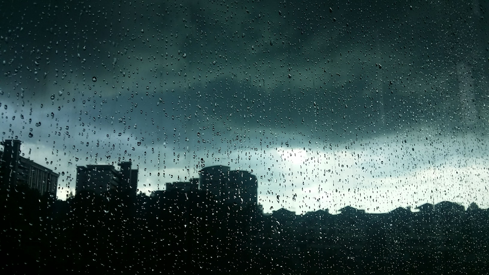

Home
A Ending
After seeing the news about the orb, you began to realise that if you would of kept the orb, you could of been famous and rich. So many thoughts come into your mind of the possibles that would been if you had kept quiet and kept the orb.
2 Years Later.
The US government now holds the strongest power on earth. This has allowed them to become the most feared nation. The world is no longer the same and everyone lives in constant fear. The US is relentles in giving away the orb.
The worlds is at contast war...
Thank you for sticking out!
Feel free to see the alternate ending.

Dark City by Elyse Chea CC0 by unsplash